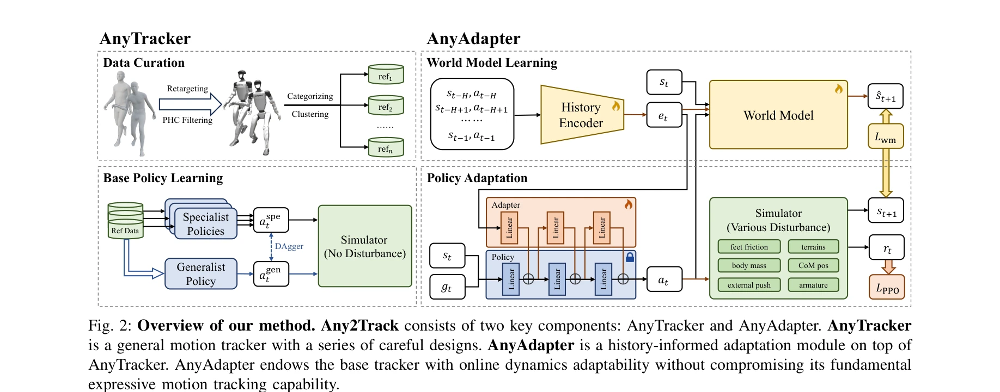

Essence

Fig. 1: (a) The humanoid tracks diverse, highly dynamic, and contact-rich motions using a single policy. (b) The humanoi
Any2Track는 휴머노이드 로봇이 다양한 동작을 추적하면서 동시에 지형, 외력, 물리적 성질 변화 등 실제 환경 교란에 적응할 수 있도록 하는 두 단계 강화학습 프레임워크를 제안한다.
저자: Zhikai Zhang, Jun Guo, Chao Chen, Jilong Wang, Chenghuai Lin, Yunrui Lian, Han Xue, Zhenrong Wang, Maoqi Liu, Jiangran Lyu, Huaping Liu, He Wang, Li Yi | 날짜: 2025-09-30 | DOI: 10.48550/arXiv.2509.13833
Fig. 1: (a) The humanoid tracks diverse, highly dynamic, and contact-rich motions using a single policy. (b) The humanoi
Any2Track는 휴머노이드 로봇이 다양한 동작을 추적하면서 동시에 지형, 외력, 물리적 성질 변화 등 실제 환경 교란에 적응할 수 있도록 하는 두 단계 강화학습 프레임워크를 제안한다.
Fig. 1: (a) The humanoid tracks diverse, highly dynamic, and contact-rich motions using a single policy. (b) The humanoi

Fig. 2: Overview of our method. Any2Track consists of two key components: AnyTracker and AnyAdapter. AnyTracker
총평: Any2Track는 동역학 적응성을 명시적으로 재정의하고 이를 기본 추적 능력과 분리하여 학습하는 혁신적 접근을 제시하며, Unitree G1에서 zero-shot sim2real 전이를 달성하여 실제 휴머노이드 로봇의 실용화에 중요한 기여를 한다.